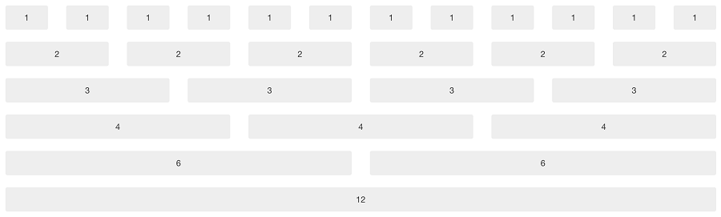

Biscaya
Responsive HTML Template
- Created: July, 2013
- By: WowThemes.net
- Email: wowthemesnet@gmail.com
Thank you for purchasing our theme. If you have any questions, please feel free to email us!
HTML Structure
For a simple two column layout, create a .row-fluid and add the appropriate number of .span* columns. As this is a 12-column grid, each .span* spans a number of those 12 columns, and should always add up to 12 for each row (or the number of columns in the parent).Everything is wrapped within the .container class.
Example:
Main content hereSidebar hereHalf column hereOther half here
Our document "columns.html" is useful if you want to see more of these 12 columns variations, but here's an illustrative example.

CSS Files and Structure
There are four main CSS files used in theme.
- bootstrap.css - (the original bootstrap stylesheet);
- style.css - (custom stylesheet for our theme);
- skin-orange.css (current skin for this theme)
- bootstrap-responsive.css - stylesheet for responsive layout.
It is important that you keep the order of the stylesheet files in header as shown in our theme
How to change color skin
In order to change the color skin, replace skin-orange.css in all of our html documents with the skin color of your choice from css/ folder.
Example,if you choose the green skin, replace:
withHow to change your theme to wide layout
Add the following piece of code at the very bottom of style.css file (from css/ folder):
body.boxed div.body {width:100%;}
body.boxed {padding:0px;}
.graysection {margin-left: 0px;margin-right: 0px;padding-left: 0px;padding-right: 0px;background:#fff;}
How to change your background
The easy way: Go to img/bg/ folder. Replace "pic2.jpg" with your own image. Keep the name and the extension the same.
The less simple way: Open style.css from css/ folder. See line 9 (top of the document) for "body.boxed". Replace the url of the background image with the url to your own image.
Important: You may not always want the full width image background (in example you might want to use a pattern), in this case make sure you remove the following (from the same "body.boxed" class area):
-webkit-background-size: cover; -moz-background-size: cover; -o-background-size: cover; background-size: cover;and make background repeat like this:
background-repeat: repeat;
JavaScript
This theme imports several Javascript files:
jquery.jsbootstrap.js -> bootstrap plugins
plugins.js -> gathers more scripts in one files - TinyNav, Isotope, Easing, carouFredSel, FlexSlider, Camera, Placeholder, Quovolver
html5shiv.js -> enable use of HTML5 sectioning elements in legacy Internet Explorer
jquery.prettyPhoto.js -> gallery
Portfolio
Structure

What to do:
Line 1 - replace/add your categories (cat1 cat3). See below for more details
Line 3 and Line 6 - replace img/dummyimage.jpg with your own image path
Line 6 and Line 10- replace singleproject.html with the link to your project single
Line 10 - replace your title
Line 12 - a very short description
ABOUT THE FILTERING
You have noticed above, line 1, "cat2 cat3". These are the categories of items, as defined in the filter navigation. See below the filter navigation as found in our theme, too:
So, add cat1 if for example you want your item to appear when you click on Landscape. Or cat3 for Green Nature click. Or cat1 cat3 for both etc.
Carousel
In our theme the carousel plugin is used as an example in elements.html file & index.html.
Structure:
Featured Clients
Call the script
$(window).load(function(){
$('#recent-projects').carouFredSel({
responsive: true,
width: '100%',
auto: true,
circular : true,
infinite : false,
prev : {
button : "#car_prev",
key : "left",
},
next : {
button : "#car_next",
key : "right",
},
swipe: {
onMouse: true,
onTouch: true
},
scroll : 2000,
items: {
visible: {
min: 4,
max: 4
}
}
});
});
Replace lines 23, 24 with the number of items to be shown.
Flex Slider
In our theme, the slider is used as an example in projectdetail.html.
Structure:
Call the script
$(window).load(function() {
$('.flexslider').flexslider({
animation: "slide"
});
});
Advanced Options
namespace: "flex-", //{NEW} String: Prefix string attached to the class of every element generated by the plugin
selector: ".slides > li", //{NEW} Selector: Must match a simple pattern. '{container} > {slide}' -- Ignore pattern at your own peril
animation: "fade", //String: Select your animation type, "fade" or "slide"
easing: "swing", //{NEW} String: Determines the easing method used in jQuery transitions. jQuery easing plugin is supported!
direction: "horizontal", //String: Select the sliding direction, "horizontal" or "vertical"
reverse: false, //{NEW} Boolean: Reverse the animation direction
animationLoop: true, //Boolean: Should the animation loop? If false, directionNav will received "disable" classes at either end
smoothHeight: false, //{NEW} Boolean: Allow height of the slider to animate smoothly in horizontal mode
startAt: 0, //Integer: The slide that the slider should start on. Array notation (0 = first slide)
slideshow: true, //Boolean: Animate slider automatically
slideshowSpeed: 7000, //Integer: Set the speed of the slideshow cycling, in milliseconds
animationSpeed: 600, //Integer: Set the speed of animations, in milliseconds
initDelay: 0, //{NEW} Integer: Set an initialization delay, in milliseconds
randomize: false, //Boolean: Randomize slide order
// Usability features
pauseOnAction: true, //Boolean: Pause the slideshow when interacting with control elements, highly recommended.
pauseOnHover: false, //Boolean: Pause the slideshow when hovering over slider, then resume when no longer hovering
useCSS: true, //{NEW} Boolean: Slider will use CSS3 transitions if available
touch: true, //{NEW} Boolean: Allow touch swipe navigation of the slider on touch-enabled devices
video: false, //{NEW} Boolean: If using video in the slider, will prevent CSS3 3D Transforms to avoid graphical glitches
// Primary Controls
controlNav: true, //Boolean: Create navigation for paging control of each clide? Note: Leave true for manualControls usage
directionNav: true, //Boolean: Create navigation for previous/next navigation? (true/false)
prevText: "Previous", //String: Set the text for the "previous" directionNav item
nextText: "Next", //String: Set the text for the "next" directionNav item
// Secondary Navigation
keyboard: true, //Boolean: Allow slider navigating via keyboard left/right keys
multipleKeyboard: false, //{NEW} Boolean: Allow keyboard navigation to affect multiple sliders. Default behavior cuts out keyboard navigation with more than one slider present.
mousewheel: false, //{UPDATED} Boolean: Requires jquery.mousewheel.js (https://github.com/brandonaaron/jquery-mousewheel) - Allows slider navigating via mousewheel
pausePlay: false, //Boolean: Create pause/play dynamic element
pauseText: 'Pause', //String: Set the text for the "pause" pausePlay item
playText: 'Play', //String: Set the text for the "play" pausePlay item
// Special properties
controlsContainer: "", //{UPDATED} Selector: USE CLASS SELECTOR. Declare which container the navigation elements should be appended too. Default container is the FlexSlider element. Example use would be ".flexslider-container". Property is ignored if given element is not found.
manualControls: "", //Selector: Declare custom control navigation. Examples would be ".flex-control-nav li" or "#tabs-nav li img", etc. The number of elements in your controlNav should match the number of slides/tabs.
sync: "", //{NEW} Selector: Mirror the actions performed on this slider with another slider. Use with care.
asNavFor: "", //{NEW} Selector: Internal property exposed for turning the slider into a thumbnail navigation for another slider
// Carousel Options
itemWidth: 0, //{NEW} Integer: Box-model width of individual carousel items, including horizontal borders and padding.
itemMargin: 0, //{NEW} Integer: Margin between carousel items.
minItems: 0, //{NEW} Integer: Minimum number of carousel items that should be visible. Items will resize fluidly when below this.
maxItems: 0, //{NEW} Integer: Maxmimum number of carousel items that should be visible. Items will resize fluidly when above this limit.
move: 0, //{NEW} Integer: Number of carousel items that should move on animation. If 0, slider will move all visible items.
// Callback API
start: function(){}, //Callback: function(slider) - Fires when the slider loads the first slide
before: function(){}, //Callback: function(slider) - Fires asynchronously with each slider animation
after: function(){}, //Callback: function(slider) - Fires after each slider animation completes
end: function(){}, //Callback: function(slider) - Fires when the slider reaches the last slide (asynchronous)
added: function(){}, //{NEW} Callback: function(slider) - Fires after a slide is added
removed: function(){} //{NEW} Callback: function(slider) - Fires after a slide is removed
Structure
MultiPurpose Responsive Template
Professional & modern website template created for you and your business prosperity. Build a top-notch business website in no time!Professional Design & Elegant Code
Beautiful behind the scenes too! Biscaya Template comes with top notch customer support to help you get your business online fast.
Call the Script
jQuery(function(){
jQuery('#camera_wrap_4').camera({
height: 'auto',
loader: 'bar',
pagination: false,
thumbnails: false,
hover: false,
opacityOnGrid: false,
imagePath: 'img/'
});
});
More options and full documentation: http://www.pixedelic.com/plugins/camera/
Contact Form
The contact form from footer is functional, just replace the current e-mail address with your own. Find the following line in contact.php file (23 if you're using Notepad++ editor) and replace the existing e-mail address with your own.
The contact form from contact.html page is different but functional, too (+ it has captcha system enabled). Go to post.php file and replace the existing e-mail address at line 9 with your own.
$to = 'wowthemesnet@gmail.com';
Sources and Credits
We've used the following images, icons or other files as listed. We do not own any credits for it.
- Bootstrap
- Font Awesome
- Flex Slider
- Camera Slider
- carouFredsel
- Quovolver
- Isotope
- Pretty Photo
- HTML5 Shiv
- OpenSans & Pacifico Font
Theme Support
Our support service is guaranteed and we are dedicated to providing you with the best one.
Complete the form and we will respond within 24 hours on business days, from Monday to Friday, 09.00-19.00, Europe Timezone.
Support does not include the addition of new functions or changes to the standard functionality.